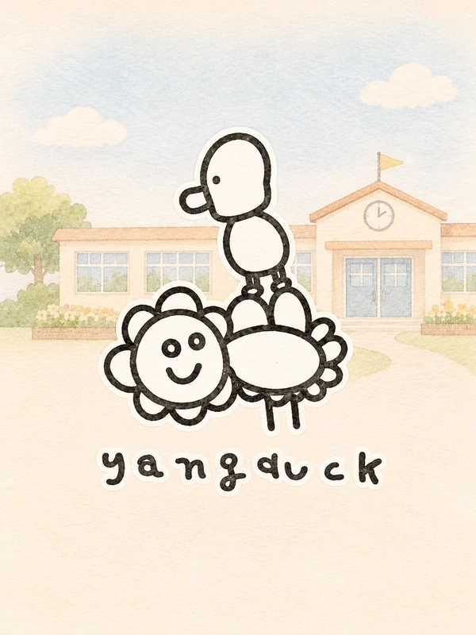

양덕분교에서는 어떤 학교생활을 할까요?
양주시 남면에 자리한 양덕분교의 2026학년도 안내문에는 무료 방과후학교와 돌봄교실, 다양한 체험학습과 통학버스 정보가 담겨 있습니다.
옥정과 양주 인근 지역에서 작은 학교를 알아보는 학부모님도 실제 학교생활과 통학 여건을 살펴보실 수 있도록 관련 내용을 모았습니다.

무료 방과후학교
2026학년도 학교 안내문에 소개된 요일별 프로그램입니다. 코딩과 드론, 예술과 체육, 독서논술 등 다양한 분야를 경험할 수 있습니다.
| 요일 | 프로그램 |
|---|---|
| 월요일 | 생활체육 |
| 화요일 | 코딩 |
| 수요일 | 방송댄스 · 드론 |
| 목요일 | 독서논술 |
| 금요일 | 바이올린 |
※ 2026학년도 안내문 기준으로 무료 방과후 프로그램으로 소개되어 있습니다. 실제 수업 시간과 신청 조건은 학교에 확인해 주세요.
돌봄교실
2026학년도 안내문에는 1~6학년 대상 돌봄교실을 20명 이내로 운영한다고 소개되어 있습니다.
돌봄교실 신청 자격, 운영 시간 및 이용 조건은 학교에 확인해 주세요.
통학버스
2026학년도 안내문에는 다음 방면의 학교 차량 운행이 소개되어 있습니다.
- 동두천소방서 방면
- 광사동 예향교회 주차장 방면
- 옥정동 연푸른초 방면
- 옥정초 방면
- 옥정고 방면
위 목록은 안내문에 기재된 방향·경유 지점이며 현재 노선, 모든 정류장 또는 이용 자격을 보장하지 않습니다. 승차 장소와 시간, 이용 가능 여부는 학교에 문의해 주세요.
입학·전학 안내
다음은 2026학년도 학교 안내문에 실린 통학구역 및 공동통학구역 관련 정보입니다.
주소지 기준 학구
- 양주시 남면 한산리
- 양주시 남면 황방리
공동통학구역으로 안내된 지역
- 회천신도시
- 옥정동
- 고읍동
- 만송동
- 광사동
공동통학구역으로 기재된 지역의 모든 주소가 동일한 조건을 충족하는 것은 아닙니다. 2027학년도 신입학·전학은 최종 확정된 통학구역 자료와 구체적인 주소를 따로 확인해 주세요.
2026년 10월 16일 발표된 2027학년도 양주시 초등학교 통학구역 문서는 행정예고안이며, 최종 확정 공고와 동일하게 볼 수 없습니다.
입학생 지원 혜택
2026학년도 학교 안내문에 다음 지원 내용이 소개되어 있습니다.
- 입학생 축하 장학금
- 선물 꾸러미 증정
- 체험학습 활동비 지원(안내문상 전액 무료)
- 돌봄교실 전원 입급 안내
2026학년도 기준 안내 내용입니다.
학교에 직접 확인해 주세요
통학구역·학교생활·방과후·돌봄 이용 조건 등은 공식 안내를 확인하는 것이 가장 정확합니다.
2026학년도 양덕분교 학교 안내문을 학부모가 정리한 비공식 정보입니다. 학교의 공식 운영계획이나 입학 자격을 보증하지 않으며, 학년도별 내용이 달라질 수 있습니다. 2027학년도 신청 전에 공식 안내로 재확인해 주세요.
※ 학부모들이 만든 비공식 소개 공간입니다. 연도에 따른 프로그램·노선·통학구역·지원 내용 변경에 유의해 주세요.